Datenanalyse mit R
9 - Statistische Modellierung 1
Saskia A. Otto
BSH 11/02 - 13/02 2019
Statistical modelling
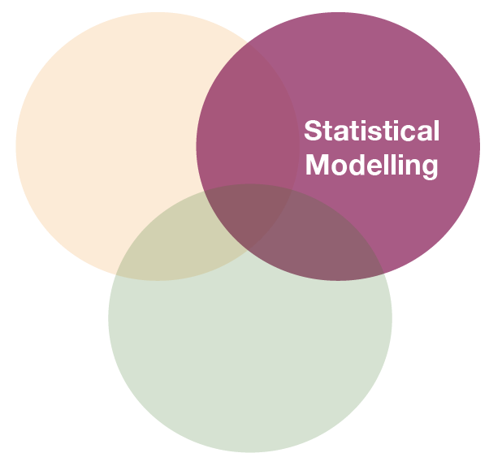
Linear statistical models
- term „linear“ refers to the combination of parameters, not the shape of the distribution: linear combination of series of parameters (regression slope, intercept) where no parameter appears as an exponent or is divided / multiplied by another parameter
\[Y_{i} = \alpha + \beta_{1}*X_{i} + \beta_{2}*X_{i}^2 + \epsilon_{i}\] \[Y_{i} = \alpha + \beta_{1}*(X_{i}*W_{i}) + \epsilon_{i}\] \[Y_{i} = \alpha + \beta_{1}*log(X_{i}) + \epsilon_{i}\] \[Y_{i} = \alpha + \beta_{1}*exp(X_{i}) + \epsilon_{i}\] \[Y_{i} = \alpha + \beta_{1}*sin(X_{i}) + \epsilon_{i}\]
Why use linear models?
- Linear regression technique well established framework
- Advantages:
- easy to interpret (constant and coefficients),
- easy to grasp (also interactions, multiple X)
- coefficients can be further used in e.g. numerical models
- easy to extend: link functions, fixed and random effects, correlation structures,… → GLM, GLMM
- BUT:
- Dynamics not always linear → transformations do not always help or would lead to information loss
Linear models in
- use function
lm(formula, data) - to look at the estimated coefficients:
coef(model) - to look at the complete numerical output:
summary(model)
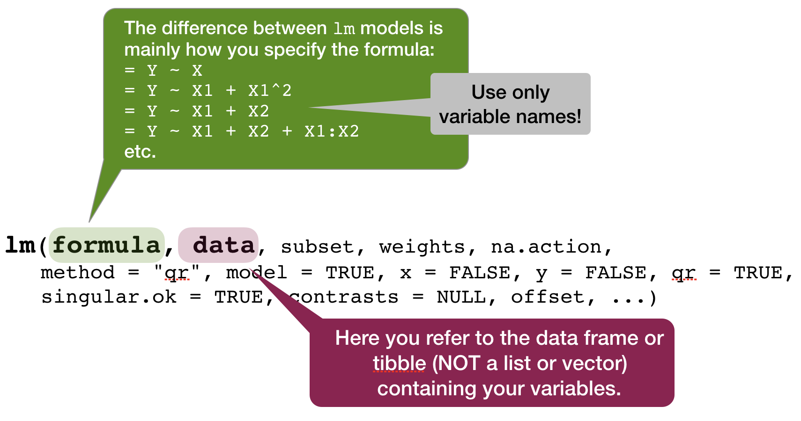
Defining the model family in the R formula
Focus on normal linear regression models
- Straight line:
lm(formula = Y ~ X, data) - Relationship with polynomials:
- Quadratic:
lm(Y ~ poly(X,2), data)or~ splines::ns(X, 2) - Cubic:
lm(Y ~ poly(X,3), data)or~ splines::ns(X, 3)
- Quadratic:
- Linearize the relationship:
lm(formula = log(Y) ~ log(X), data)
- Several explanatory variables with and without interactions
lm(formula = Y ~ X1 + X2 + X1:X2, data)or as shortcut:lm(formula = Y ~ X1*X2, data)
Overview of model formulae in R
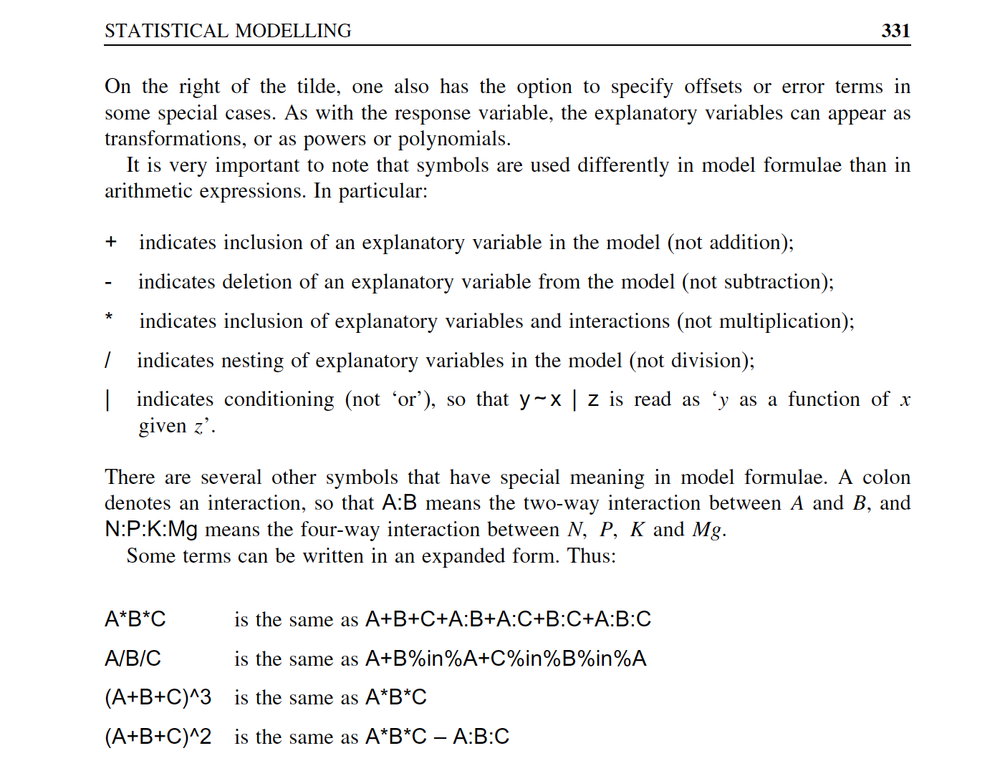
source: Crawley (2007)
Your turn...
Exercise 1: Bottom temperature as a function of latitude
Apply the following data manipulation to your tidy (!) hydro dataset
hydro$fmonth <- as.factor(hydro$month)
temp_bot <- filter(hydro, depth > 30, pres >= (depth-10)) %>%
group_by(lat, long, date_time, month, fmonth) %>%
summarise(temp = mean(temp, na.rm = TRUE)) %>%
ungroup() %>%
select(lat, long, fmonth, temp) %>%
drop_na(temp)
Exercise 1: Bottom temperature as a function of latitude
Apply a linear regression model to the temp_bot dataset and model temp as a function of lat (temp ~ lat)
Look at the summary of your model:
- What would be the corresponding linear regression equation?
- How broad is the standard error?
- How much of the total variability is explained by latitude?
- Is the effect significant?
Solution 1: Iris length relationship
mod <- lm(temp ~ lat, data = temp_bot); coef(mod)
## (Intercept) lat
## 30.5075586 -0.4234427
summary(mod)
##
## Call:
## lm(formula = temp ~ lat, data = temp_bot)
##
## Residuals:
## Min 1Q Median 3Q Max
## -4.7229 -1.2015 -0.2699 0.5637 8.4918
##
## Coefficients:
## Estimate Std. Error t value Pr(>|t|)
## (Intercept) 30.50756 1.19926 25.44 <2e-16 ***
## lat -0.42344 0.02093 -20.24 <2e-16 ***
## ---
## Signif. codes: 0 '***' 0.001 '**' 0.01 '*' 0.05 '.' 0.1 ' ' 1
##
## Residual standard error: 2.133 on 1529 degrees of freedom
## Multiple R-squared: 0.2112, Adjusted R-squared: 0.2107
## F-statistic: 409.5 on 1 and 1529 DF, p-value: < 2.2e-16
Visualizing simple linear regression models
Visualize your linear regression
Use geom_smooth and set the method argument to the name of the modelling function (in this case 'lm'). If you don't want to show the standard error additionally, set se = FALSE:
p <- ggplot(temp_bot,
aes(x = lat, y = temp)) +
geom_point() +
geom_smooth(method = "lm",
se = FALSE)
p
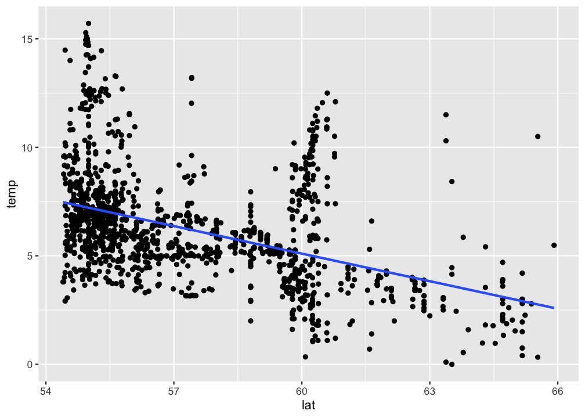
Visualize your linear regression manually
You can also compute the predicted values for your model using
predict(model)from the stats package → simply returns a vector, which you can add to your data using thedplyr::mutate()functionadd_predictions(data, model, var = "pred")from the modelr package (in tidyverse) → adds the variable 'pred' containing the predicted values to your data frame; useful when piping operations!
mutate(temp_bot, pred = predict(mod)) %>%
ggplot(aes(x = lat)) +
geom_point(aes(y = temp)) +
geom_line(aes(y = pred))
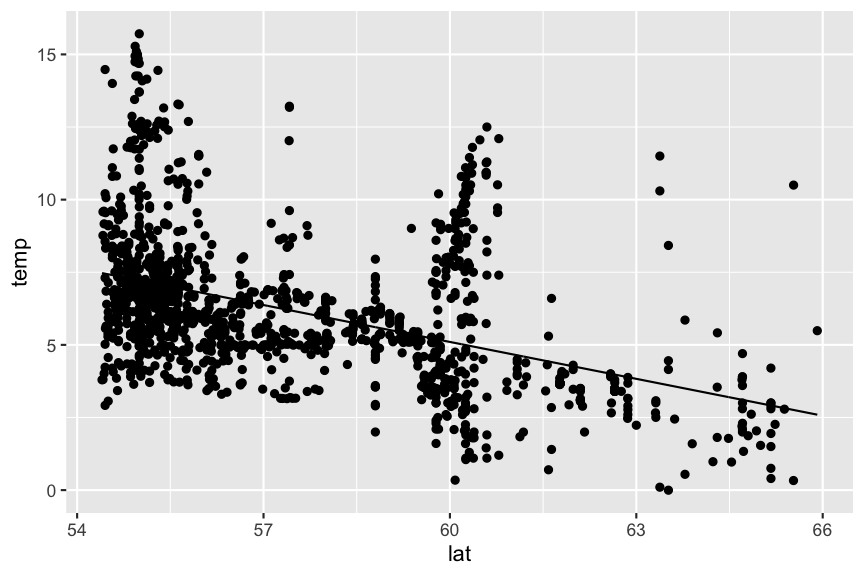
Predictions are best visualised from an evenly spaced grid of X values that covers the region where your data lies
- Add to the argument
newdatain a data frame that includes an even X sequence:predict(model, newdata = data.frame(x = seq(min(x), max(x), 0.1)))
- Easier: Use the function
modelr::data_grid(data, X1, X2)to generate this grid. If you have more than one X, it finds the unique variables and then generates all combinations.- Use this grid then for the
add_predictions(data = grid, model)function
- Use this grid then for the
library(modelr)
grid <- temp_bot %>%
data_grid(lat = seq_range(lat, 100)) # 100 evenly spaced values between min and max
add_predictions(grid, mod) %>%
ggplot(aes(x = lat)) + geom_line(aes(y = pred))
Your turn...
Exercise 2: Visualizing the temp ~ lat relationship
Visualize your temp ~ lat model using
geom_smooth()predict()ormodelr::add_predictions()to add a line manually.
Aside: intercept terms
R includes an intercept term in each model by default
\[y = a + bx\]
y ~ x
Aside: intercept terms (cont)
You can include an intercept explicitly by adding a 1 to the formula term. If you want to exclude the intercept, add a 0 or substract a 1:
# includes intercept
mod1 <- lm(sal ~ pres, data = sal_profile)
mod1 <- lm(sal ~ 1 + pres, data = sal_profile)
# excludes intercept
mod2 <- lm(sal ~ 0 + pres, data = sal_profile)
mod2 <- lm(sal ~ pres - 1, data = sal_profile)
mod1
##
## Call:
## lm(formula = sal ~ 1 + pres, data = sal_profile)
##
## Coefficients:
## (Intercept) pres
## 5.57662 0.01283
mod2
##
## Call:
## lm(formula = sal ~ pres - 1, data = sal_profile)
##
## Coefficients:
## pres
## 0.1644
Not including a forces the intercept through the origin of coordinates
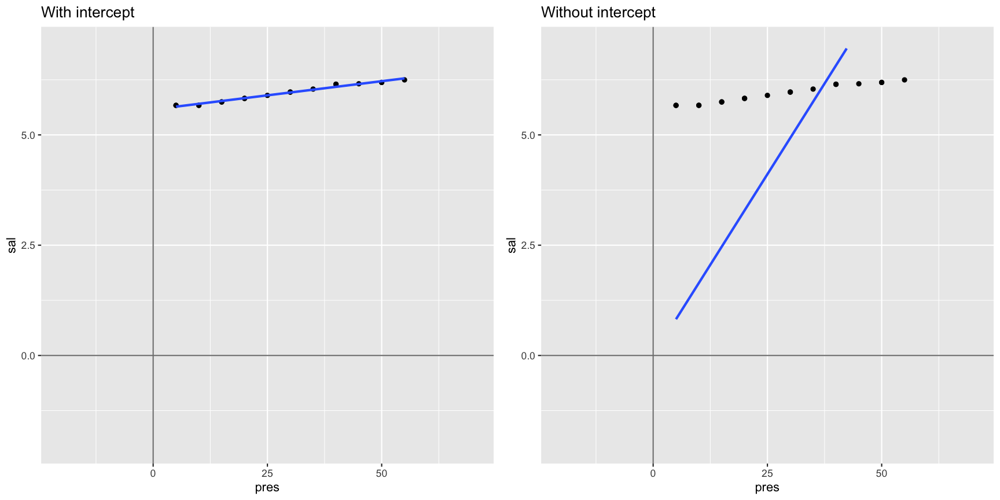
Interpreting models with categorical X variables
Categorical X variables
If X is categorical it doesn't make much sense to model \(Y ~ a + bX\) as \(X\) cannot be multiplied with \(b\). But R has a workaround:
- categorical predictors are converted into multiple continuous predictors
- these are so-called dummy variables
- each dummy variable is coded as 0 (FALSE) or 1 (TRUE)
- the no. of dummy variables = no. of groups minus 1
- all linear models fit categorical predictors using dummy variables
The data
df
## y length
## 1 5.3 S
## 2 7.4 S
## 3 11.3 L
## 4 17.9 M
## 5 3.9 L
## 6 17.6 M
## 7 18.4 L
## 8 12.8 L
## 9 12.1 M
## 10 1.1 L
The dummy variables
model_matrix(df, y ~ length)
## # A tibble: 10 x 3
## `(Intercept)` lengthM lengthS
## <dbl> <dbl> <dbl>
## 1 1 0 1
## 2 1 0 1
## 3 1 0 0
## 4 1 1 0
## 5 1 0 0
## 6 1 1 0
## 7 1 0 0
## 8 1 0 0
## 9 1 1 0
## 10 1 0 0
Where did the length class L go?
The data
df
## y length
## 1 5.3 S
## 2 7.4 S
## 3 11.3 L
## 4 17.9 M
## 5 3.9 L
## 6 17.6 M
## 7 18.4 L
## 8 12.8 L
## 9 12.1 M
## 10 1.1 L
The dummy variables
model_matrix(df, y ~ length)
## # A tibble: 10 x 3
## `(Intercept)` lengthM lengthS
## <dbl> <dbl> <dbl>
## 1 1 0 1
## 2 1 0 1
## 3 1 0 0
## 4 1 1 0
## 5 1 0 0
## 6 1 1 0
## 7 1 0 0
## 8 1 0 0
## 9 1 1 0
## 10 1 0 0
L is represented by the intercept !
Example: Including fmonth in our model
mod2 <- lm(temp ~ lat + fmonth, data = temp_bot)
summary(mod2)
##
## Call:
## lm(formula = temp ~ lat + fmonth, data = temp_bot)
##
## Residuals:
## Min 1Q Median 3Q Max
## -3.7958 -1.2833 -0.3942 0.9504 7.9780
##
## Coefficients:
## Estimate Std. Error t value Pr(>|t|)
## (Intercept) 29.4164 1.3629 21.584 < 2e-16 ***
## lat -0.4207 0.0230 -18.289 < 2e-16 ***
## fmonth2 0.1055 0.2803 0.376 0.706738
## fmonth3 -0.3645 0.2745 -1.328 0.184309
## fmonth4 -0.4013 0.3957 -1.014 0.310725
## fmonth5 -0.1904 0.3004 -0.634 0.526267
## fmonth6 0.6364 0.3007 2.116 0.034494 *
## fmonth7 2.1772 0.2857 7.620 4.44e-14 ***
## fmonth8 1.9601 0.3015 6.501 1.08e-10 ***
## fmonth9 1.4548 0.2775 5.242 1.82e-07 ***
## fmonth10 1.0260 0.2893 3.546 0.000403 ***
## fmonth11 2.0936 0.2755 7.599 5.20e-14 ***
## fmonth12 1.4714 0.3774 3.899 0.000101 ***
## ---
## Signif. codes: 0 '***' 0.001 '**' 0.01 '*' 0.05 '.' 0.1 ' ' 1
##
## Residual standard error: 1.91 on 1518 degrees of freedom
## Multiple R-squared: 0.3726, Adjusted R-squared: 0.3676
## F-statistic: 75.12 on 12 and 1518 DF, p-value: < 2.2e-16
Model assumption
Assumptions of linear regression models
- Independence (most important!)
- Homogeneity / homogenous variances (2nd most important)
- Normality / normal error distribution
- Linearity
Homogeneity
→ The variance in Y is constant (i.e. the variance does not change as Y gets bigger/smaller).
→ Only one variance has to be estimated and not one for every X value.
→ Also the multiple residuals for every X are expected to be homogeneous.
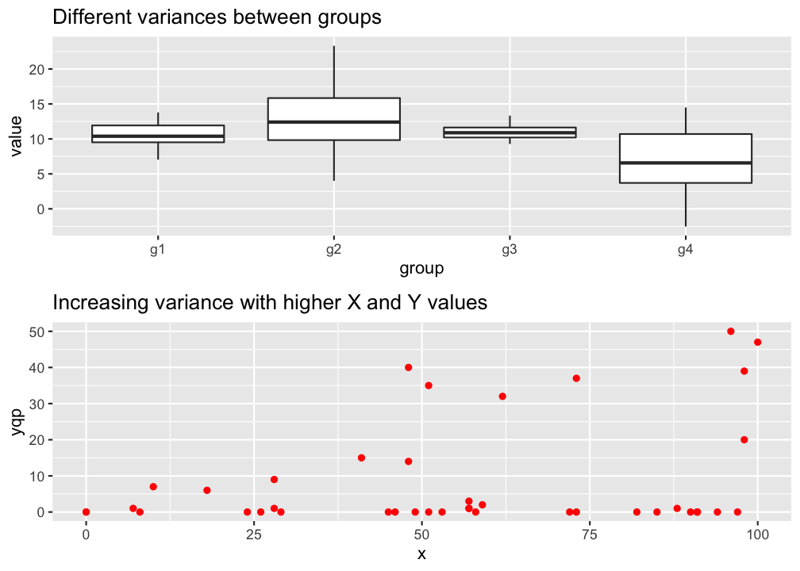
p
Check: outlier / influential observations
Something on outliers
- Might incorrectly influence analysis
- 1 outlier only → take it out
- Several tests (e.g. regression) model the center of the data; if you are more interested in the outlier apply outlier-analysis techniques
- Outliers in 1 dimension are not necessarily outliers in 2 or more dimensions
But which one is an outlier? That depends on the dimensional perspective.
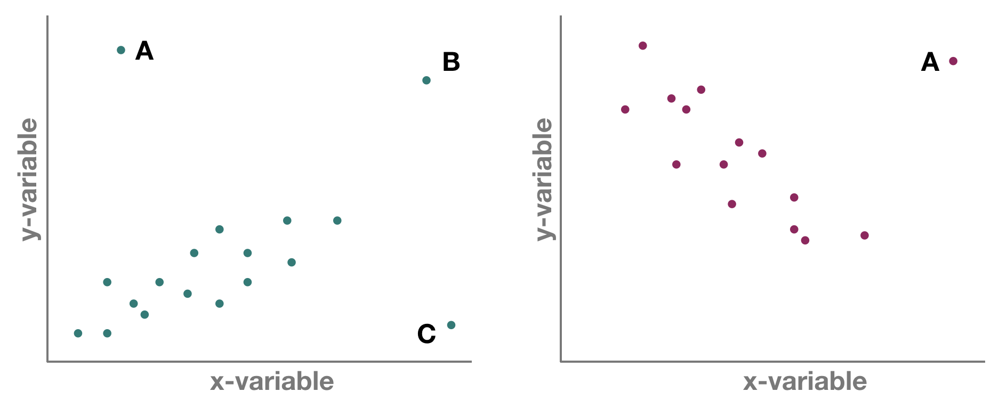
But which one is an outlier? That depends on the dimensional perspective.
1-dimensional (left panel): Point A might be an outlier of variable y, but not of x; C is an outlier of x but not y, and B is an outlier of both x and y separately
2-dimensional space xy (left panel): A and C could be outliers (both are far away from the regression line) but B is not an outlier anymore, since it lies on the regression line. Right panel: Point A could be an outlier in the x-space but is definitely one in the xy-space
Leverage / Cook‘s distance ⇒ step of model validation
- Leverage: tool that identifies observations that have rather extreme values for the explanatory variables and may potentially bias the regression results
- Cook's distance statistic: measure for influential points → identifies single observations that are influential on all regression parameters: it calculates a test statistic D that measures the change in all regression parameters when omitting an observation.
- D > 0.5 considered as too influential
- D > 1: very critical
- It is easier to justify omitting influential points if they have both, large Cook and large leverage values.
Leverage / Cook‘s distance ⇒ step of model validation
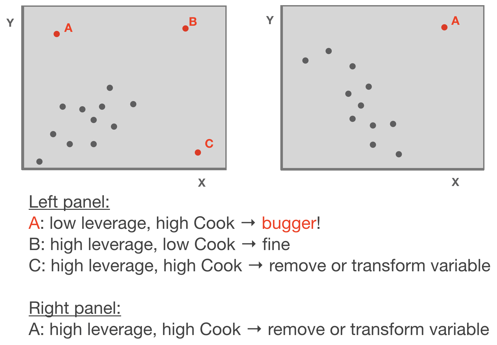
Adapted from: Zuur et al. (2007)
p
Standard graphical output for model validation
Lets use the temp ~ lat example
par(mfrow = c(2,2))
plot(mod)
Ordinary vs. standardized residuals
- Ordinary residuals: observed – fitted value
- Standardized residuals = the residual divided by its standard deviation:
\[e_{stand.} = \frac{e_{i}}{\sqrt{MS_{Residual}*(1-h_{i})}}\]
- where \(e_{i}\) = observed - fitted value; \(h_{i}\) = leverage for observation i; \(MS_{Residual}\) represents the residual variance → more on this later
- Standardised residuals are assumed to be normally distributed with expectation 0 and variance 1; N(0,1).
- Consequently, large residual values (>2) indicate a poor fit of the regression model.
Compute residuals in R
You can compute both types of residuals using
residuals(model)(works too:resid()) from the stats package → returns a vector with the ordinary residualsrstandard(model)from the stats package → returns a vector with the standardized residualsadd_residuals(data, model, var = "resid")from the modelr package (in tidyverse) → adds the variable 'resid' containing the ordinary residuals to your data frame; useful when piping operations!
Additional graphics for model validation
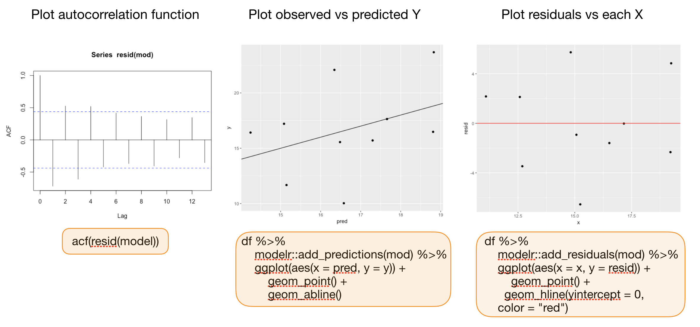
Your turn...
Quiz: Test for spatial pattern in residuals
Calculate the residuals using the function residuals(mod) and save them as a column in temp_bot.
Now plot your datapoints on a map (with x=long and y=lat) and map the residuals to the color
aesthetic
Solution:
modelr::add_residuals(temp_bot, mod) %>%
ggplot(aes(x=long, y=lat)) +
geom_point(aes(col = temp)) +
scale_color_gradient2(midpoint = 5,
low = "blue", mid = "yellow",
high = "red", na.value = "black",
limits = c(0, 10))
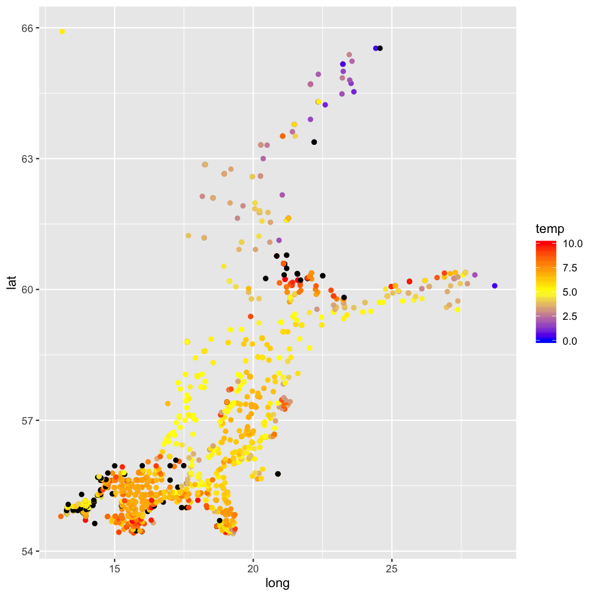
An overview of common linear models
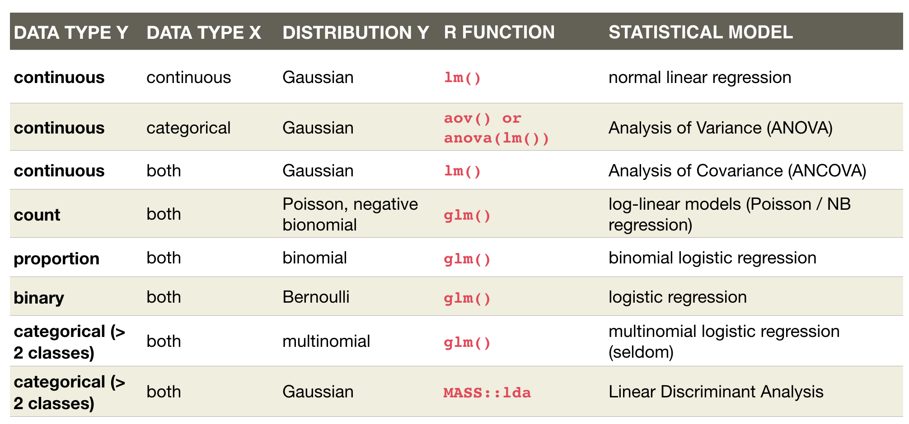
Overview of functions you learned today
linear regression model:
lm(), coef(), summary(), confint()
geom_smooth(method = "lm"),
predict(), modelr::add_predictions(),
plot(model), residuals(), resid(), rstandard(model), modelr::add_residuals(data)
How do you feel now.....?
Totally confused?

Try out the exercises and read up on linear regressions in
- chapter 23 on model basics in 'R for Data Science'
- chapter 10 (linear regressions) in "The R book" (Crawley, 2013, 2nd edition) (an online pdf version is freely available here)
- or any other textbook on linear regressions
Totally bored?
Model the temperature or oxygen as a function of depth. Choose a single stations or model across all stations.
Totally content?
Then go grab a coffee, lean back and enjoy the rest of the day...!
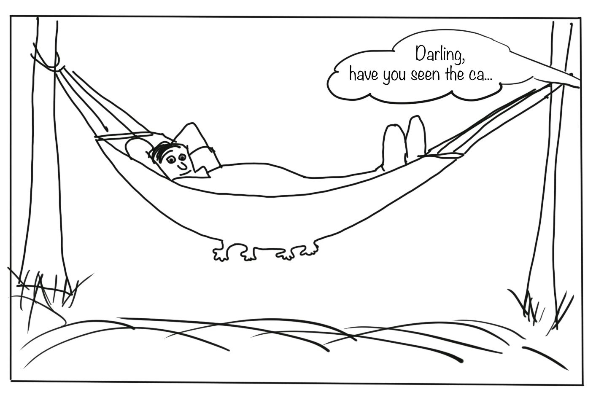
Bei weiteren Fragen kontaktieren Sie mich unter:
saskia.otto@uni-hamburg.de
http://www.researchgate.net/profile/Saskia_Otto
http://www.github.com/saskiaotto

Diese Arbeit ist lizensiert unter der
Creative Commons Attribution-ShareAlike 4.0 International License
mit Ausnahme externer
Materialien gekennzeichnet durch die source: Angabe.
Bild auf Titel- und Abschlussfolie: Frühjahrsblüte in der Nordsee
USGS/NASA Landsat:
Spring Color in the North Sea, Landsat 8 - OLI, May 7, 2018
(unter CC0 lizenz)